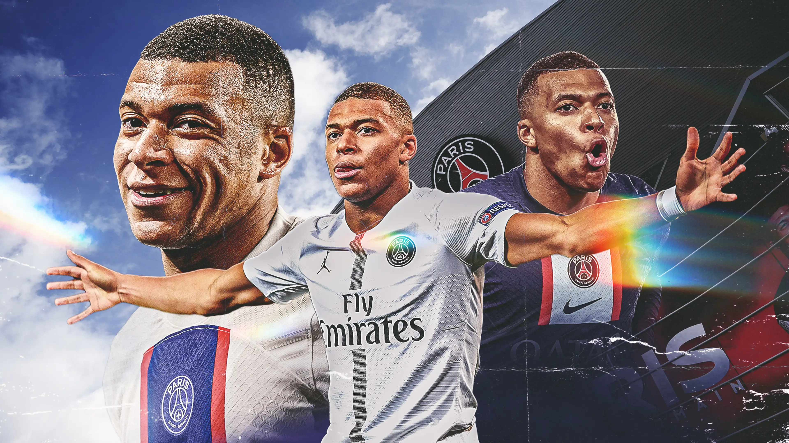

Biography of Kylian Mbappe
About

Kylian Mbappé Lottin is a French professional footballer who plays as a forward for Ligue 1 club Paris Saint-Germain and captains the France national team.
Regarded as one of the best players in the world, he is renowned for his dribbling abilities, exceptional speed, and finishing. Born: December 20, 1998
(age 25 years), 19th arrondissement, Paris, France Current teams: Paris Saint-Germain F.C. (#7 / Forward), France national football team (#10 / Forward).
Parents: Fayza Lamari, Wilfried Mbappé.Dates joined: August 31, 2017 (Paris Saint-Germain F.C.), 2017 (France national football team), 2015 (AS Monaco).
Salary: 72 million EUR (2023),height: 1.78 m and siblings: Ethan Mbappé, Jirès Kembo Ekoko.